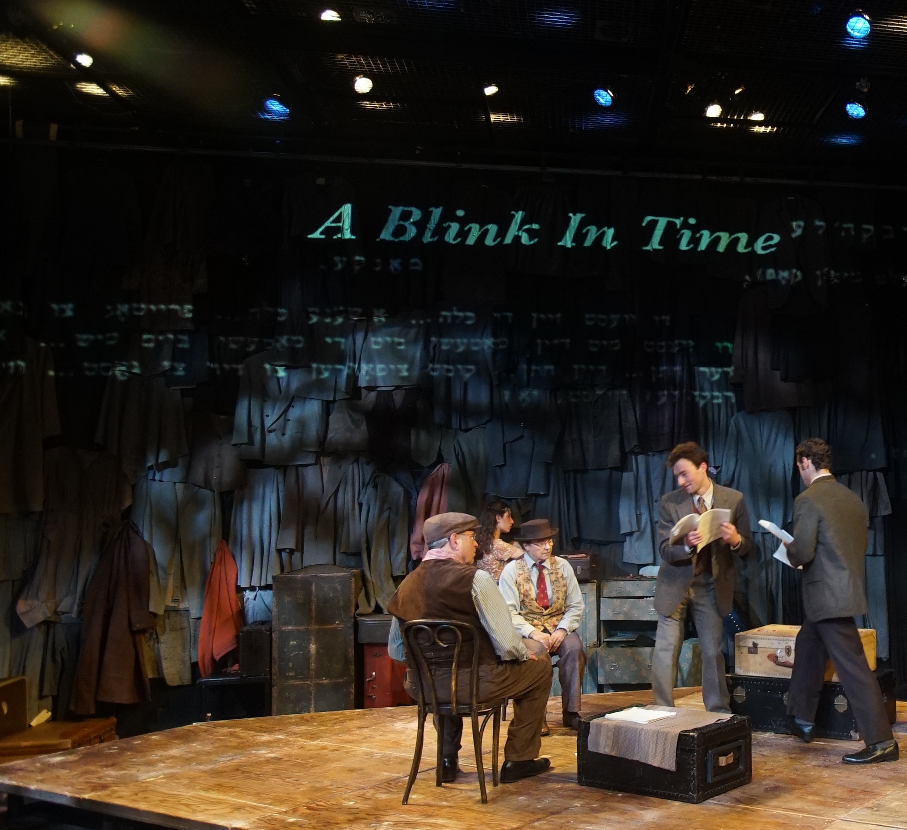

Indecent - Projection Design
As Projection Designer for this production at UCSB's Performing Arts Theater, I developed a design concept, gathered and presented visual research, created renderings, drafted projector diagrams, designed a custom projector housing, and created and programmed all cues for the show.


Media created in Photoshop and After Effects, diagrams drafted in Vectorworks, cued in QLab.
